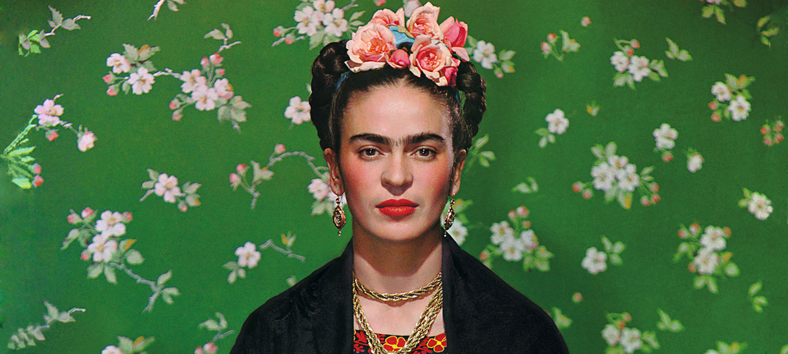
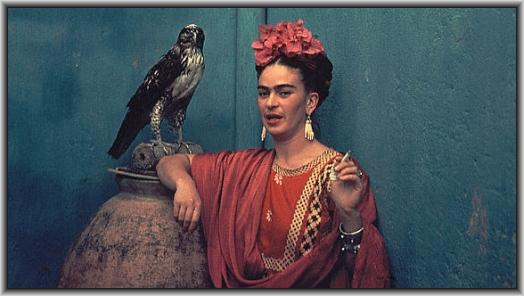
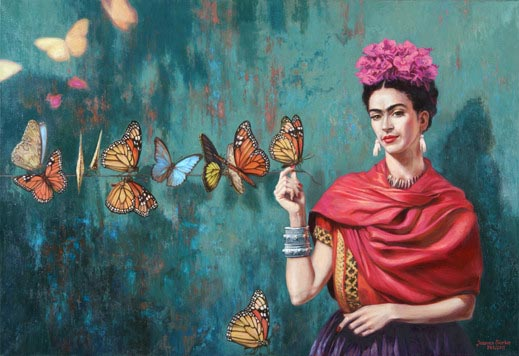
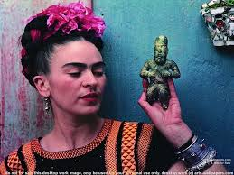

Frida
Frida Kahlo (Coyoacán, Meksiko, 6. srpnja 1907. – Coyoacán, Meksiko, 13. srpnja 1954.) meksička slikarica realizma, kubizma i nadrealizma.

Životopis

Rođena je u Ciudad Méxicu 6. srpnja 1907. kao Magdalena Carmen Frieda Kahlo y Calderón; treća kćer Guillerma (Karla Wilhelma) Kahla, fotografa židovskog podrijetla iz Njemačke, i Matilde Calderón y González, Španjolke rođene u Americi. God. 1922. upisala se na Nacionalnu pripremnu školu, najprestižniju obrazovnu instituciju u Meksiku, koja je upravo tada počela primati djevojke. Tamo je upoznala budućeg muža, Diega Riveru uz kojega je prihvatila komunističku ideologiju.God. 1925., Frida preživljava tešku prometnu nesreću u kojoj je ozlijedila desnu nogu i zdjelicu, a kao posljedica nesreće javila se neplodnost. Sljedeće godine naslikala je svoj prvi portret, poslije čega je uslijedila velika serija slika u kojima dominiraju teme boli, patnje i razaranja. God. 1928. ponovo je srela Riveru, a vjenčali su se sljedeće godine, a 1930. par je otišao u San Francisco, dok po povratku u Meksiko, odlaze u New York, na Riverinu izložbu, koja je bila organizirana u Muzeju modernih umjetnosti.

Frida je jednom rekla: Ja sam pretrpjela dvije teške nesreće u svom životu ... prva je bio tramvaj koji me srušio, a druga je bio Diego. Po posljednjem povratku u Meksiko 1935., Rivera se upušta u aferu s Fridinom mlađom sestrom Kristinom. Ubrzo se i Kahlo upušta u avanture, kako s muškarcima, tako i sa ženama. Njihov brak je bio primjerom otvorene veze, jer je Kahlo imala brojne ljubavne veze s muškarcima i ženama. Njezine najpoznatije veze bile su sa svjetski poznatom plesačicom, glumicom i političkom ikonom Josephine Baker, te američkom umjetnicom Georgiom O’Keeffe. Jedna od njenih najozbiljnijih avantura, bila je s ruskim revolucionarem, Lavom Trockim. Nakon njegove smrti u Meksiku, Frida je slijedila staljinizam, a potom maoizam.Zahvaljujući inicijativi Andréa Bretona ponuđena joj je izložba u modnoj Galeriji Juliana Levyja 1938. u New Yorku. Izložba je bila pravi trijumf, a pola slika je i prodano. 1939. Breton joj predlaže da joj organizira izložbu u Parizu, ali po dolasku u Francusku, Frida koja nije govorila francuski jezik, shvaća da Breton nije čak ni podigao slike na carini. Izložba je bila otvorena, sa šest tjedana zakašnjenja, ali ipak financijski uspješna.

Kahlo dobiva mnogobrojne odzive i pohvale, uključujući Picassa i Kandinskog. U Francuskoj je i pozirala za naslovnicu časopisa Vogue.U Meksiku, 1953. god. Frida je imala prvu samostalnu izložbu. Zbog lošeg zdravlja doktori su joj zabranili sudjelovanje, no ona dolazi na nosilima. Gomila joj čestita, a izložba postiže nevjerojatan uspjeh. Iako se još se nije bila dovoljno oporavila od upale pluća koja ju je zadesila, sudjeluje u demonstracijama protiv intervencije SAD-a u Gvatemali, te od posljedica tog impulzivnog čina umire u noći sa 12. na 13. srpnja 1954. u „Plavoj kući” (Casa Azul) u Coyoacánu, u kojoj je i rođena, 7 dana nakon svojeg 47. rođendana. Kao službeni uzrok smrti navedena je plućna embolija, premda su neki smatrali kako je posrijedi bila prevelika doza lijekova koja možda jest, a možda i nije bila slučajna.
Djela |
|
|
|
Tijekom svog života Frida je naslikala oko 200 slika, crteža i skica, od čega 143 slike, od kojih su 55 autoportreti. Na pitanje zašto je naslikala toliko autoportreta, Frida je odgovorila: „Zato što sam ja tako često sama .... jer sam subjekt kojeg znam ponajbolje”. |

Popularna kultura
- Frida Kahlo, biografski dokumentarac koji sadrži arhivske snimke, prvi put prikazan u Amsterdamu 1982.
- Frida, naturaleza viva, film redatelja Paula Le Duca iz 1984. u kojem Fridu Kahlo glumi Ofelia Medina
- Frida Kahlo's Corset, kratki eksperimentalni film redateljice Liz Crow iz 2000. u kojem Fridu Kahlo glumi Isolte Avila
- Frida, igrani film iz 2002. u kojem Fridu Kahlo glumi Salma Hayek
- Frida vs. Frida, kratki eksperimentalni dokumentarni film redateljice Natalie Nazarove iz 2005.
- "The Life and Times of Frida Kahlo", dokumentarac redateljice Amy Stechler iz 2005.
- U epizodi TV serije Simpsoni "Girls Just Want to Have Sums" škola se podijeli po spolu, a ženska strana uključuje slike Fride Kahlo i Georgie O'Keeffe na zidu.
- U filmu Princezini dnevnici Paolo kaže: „Sviđaju mi se tvoje obrve, zvat ćemo ih Frida i Kahlo.”
- Radnja romana Slavenke Drakulić Frida ili o boli (2007.) temelji se na biografiji Fride Kahlo.